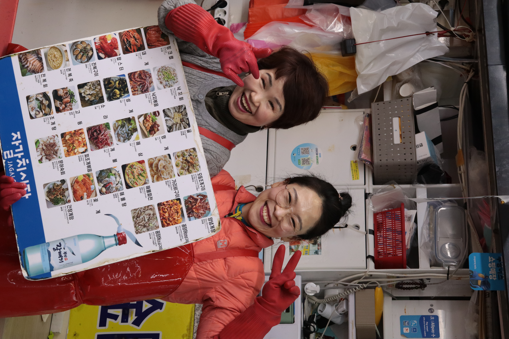

MON RÔLE
- Storytelling & repérages
- Prise de contact avec les personnes interviewées
- Réalisation & responsable du multilinguisme
- Rédaction éditoriale
- Traduction des sous-titres du coréen vers le français
- Concept & design de l'affiche
•
Site du documentaire
•
En tournage


